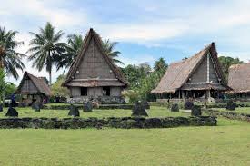
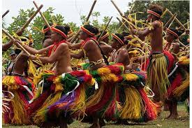
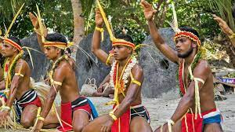

Yap is actually made up of four separate islands: Yap Proper (Marbaaq), Gagil-Tamil, Maap (Yapese: Maap′), and Rumung. The four islands are separated by relatively narrow water features, and the islands are surrounded by a common coral reef. Gagil-Tamil was once connected to Yap Proper, but a canal, Tagireeng Canal, less than 10 meters wide, was constructed that separated the two landmasses in 1901. Yap was formed from an uplift of the Philippine Sea Plate, and is referred to as a "high" island as opposed to atolls. The land is mostly rolling hills, with densely vegetated valleys and savanna interiors. Mangrove swamps line much of the shore, although there are beaches on the northern and western sides of the islands. Excluding the reef area, the Yap Main Islands are approximately 24 km long, 5–10 km wide, and 98 km2. The highest elevation is 178 m (584 ft) at Mount Taabiywol in Fanif municipality on Yap Proper.
  Yap is known for its stone money, known as Rai, or Fei: large doughnut-shaped, carved disks of (usually) calcite, up to 4 m (12 ft) in diameter (most are much smaller). The smallest can be as little as 3.5 centimetres (1.4 in) in diameter.[3] Many of them were brought from other islands, as far as New Guinea, but most came in ancient times from Palau. Their value is based on both the stone's size and its history. Historically the Yapese valued the disks because the material looks like quartz, and these were the shiniest objects available. Eventually the stones became legal tender and were even mandatory in some payments.[4] The value of the stones was kept high due to the difficulty and hazards involved in obtaining them. To quarry the stones, Yapese adventurers had to sail to distant islands and deal with local inhabitants who were sometimes hostile. Once quarried, the disks had to be transported back to Yap on rafts towed behind sail-driven canoes. The scarcity of the disks, and the effort and peril required to get them, made them valuable to the Yapese.